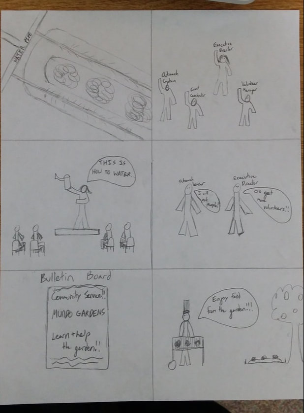
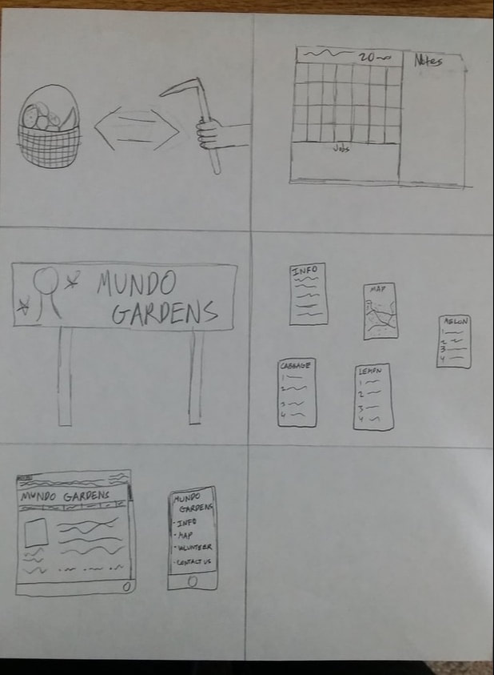
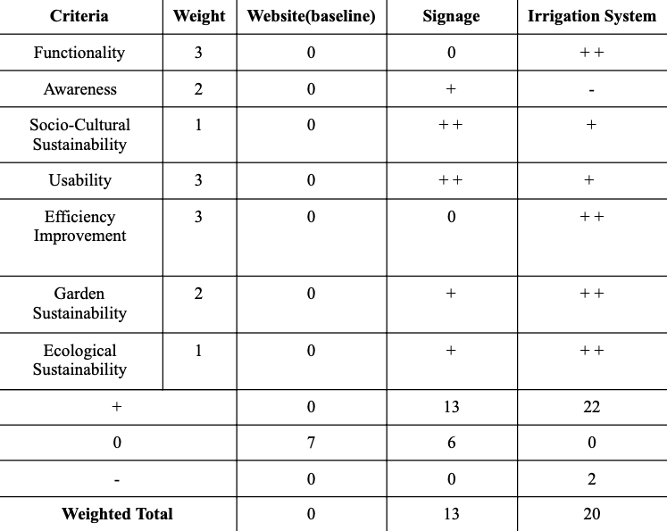
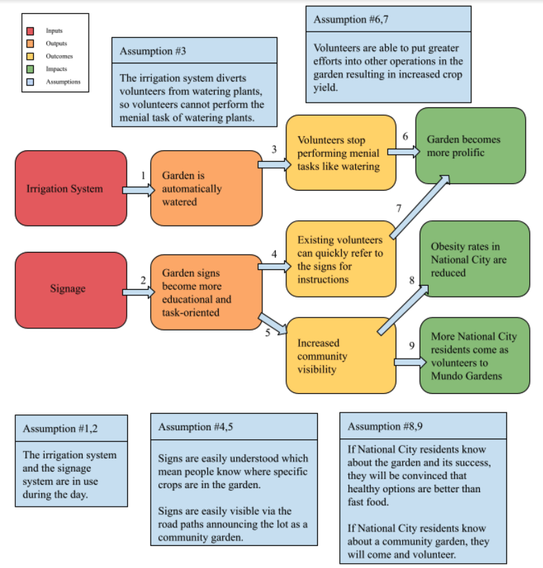
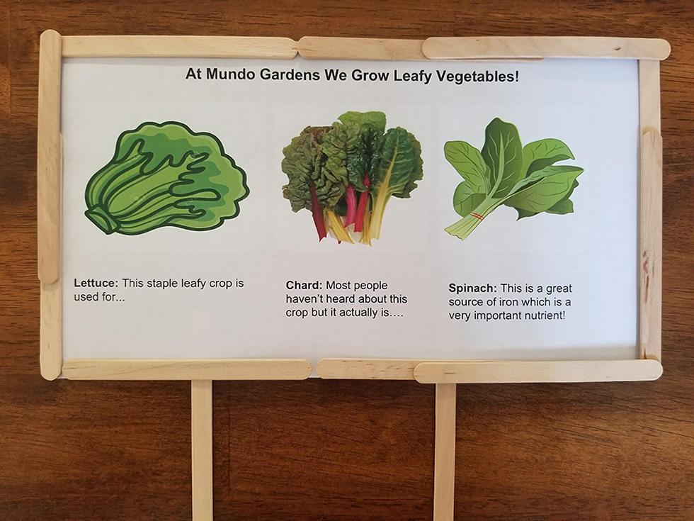
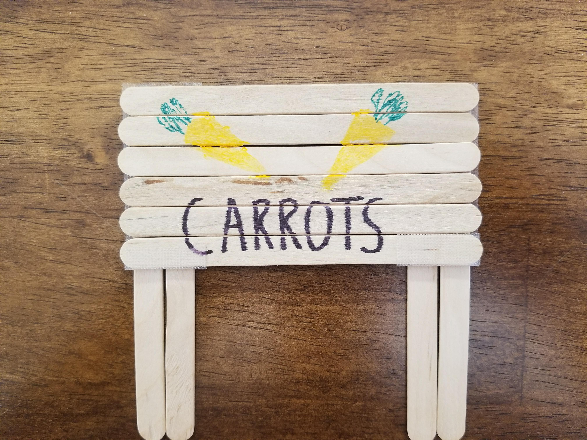
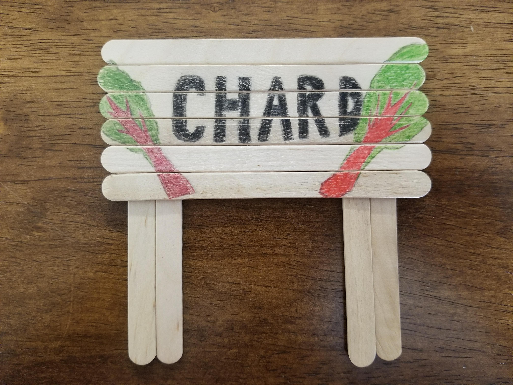

At UCSD, I enrolled into the course, ENG 100D: Design for Development, a class made to involve students in human-centered design to solve the problems of local and global communities.
I happily took part in a team of 7 to help a small developing community garden called Mundo Gardens. Located in National City, the garden was founded to be a community hub for the
impoverished area. It was meant for the community to come and have events as well as help take care of the garden in return for fresh fruits and vegetables, a rarity in a city where
fast food chains are in abundance due to the poverty levels.
While the whole team made a collective effort on the project regarding the various aspects of documentation, research, and implementation, each member did have a specific job in
the group. My specific role was Community Liaison, where I communicated information with the organization about our plans, what we discovered, when we would meet, and any other
relevant information.
I really enjoyed working on this project because I got to help (even if just by a little bit) real-world communities that could use the help. It really connected with my passion
of wanting to help people. By taking this class and doing this project, I learned and improved my skills in communication, team work, problem solving, and compromising.
1. Needfinding / Ethnography
Each member of the group interviewed members of Mundo Gardens. I interviewed Gustavo Luna, main handyman/gardener. I talked to him about his contributions to the garden, the past of
the garden and how it used to thrive, the previous owner, and about the issues he was having currently at the farm. He particularly pointed out the issue with manual watering and
the loss of water from broken tools.
2. Research and Ideating
Through a meeting where we discussed all their problems, both short and long term, and the possible solutions, ranging from funny, impossible ideas to serious, possible ones, we
determined at the time, that they needed short term solutions in order for them to focus their attention on addressing longer term problems and solutions. Through research and
brainstorming, we determined they needed an irrigation system to lessen the work load, as well as, signage to get the garden more awareness from neighbors before they can work on
outreach and events.




3. Low Fidelity Prototypes
We created crude prototypes of an irrigation system using a bottle of water, cups, and a tube with holes, and signage using popsicle sticks and markers. The purpose of these crude
starting prototypes was to address how the solutions would work, how easily they would work, as well as, how they would look. We tested the prototypes and also got advice from
students on their thoughts.



4. High Fidelity Prototypes Test
We went to a bigger scale by buying some materials from Home Depot and using reclaimed wood and bricks from the garden to make bigger, but still simple prototypes of the solutions.
We tested the prototypes, but we also included the clients and some people from the community to try the improved prototype.
We refined and implemented a skeletal irrigation structure that they could modify to fit whatever section of the garden they want, and implemented signage around the garden that
they replaced the old ones with.